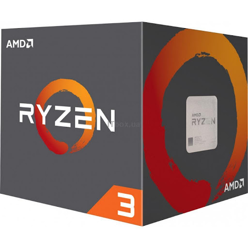
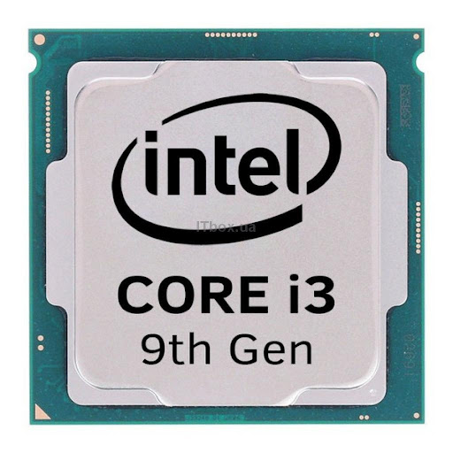
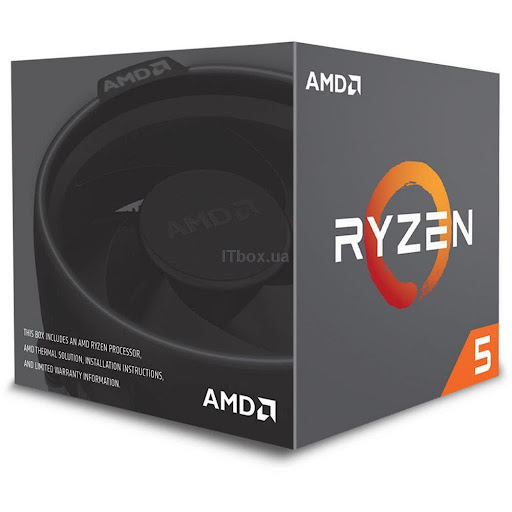

РЕЙТИНГ ПРОЦЕССОРОВ – ТОП ЛУЧШИХ МОДЕЛЕЙ 2021 ГОДА
Начинать собирать ПК лучше всего с CPU особенности выбора которого мы уже описали в статье “Как выбрать процессор в 2021“. Там подробно описано на что обращать внимание и какие основные отличия между процессорами двух главных брендов AMD и Intel.
Чем мы руководствовались при выборе?
Несмотря на то, что еще в начале 2021 AMD представили обновленную линейку процессоров Ryzen 5000, в нашу подборку новинки практически не попали (кроме одной модели). Новые Райзены получились относительно дорогими, сравнимыми по цене с аналогами от Intel 10-го поколения, что нивелировало выгоду от такой покупки. Также мы не рассматривали узкоспециализированные профессиональные и серверные процессоры AMD Threadripper и Intel Xeon.
Главное из чего мы исходили:
- соответствие модели какой либо нише;
- цена/производительность;
- возможности по апгрейду.
Бюджетные процессоры
В нашем бюджетном сегменте подобраны процессоры, которые одинаково хорошо подойдут как для работы, так и для гейминга начального или даже высокого уровня (здесь все во многом зависит от видеокарты). Если говорить об играх то (в зависимости от класса видеокарты) можно будет поиграть на средних настройках графики в Full HD такие проекты как: Far Cry 5, Witcher III и тд. Естественно, что сетевые проекты с хорошей оптимизацией типа PUBG такая система тоже “потянет”.
Мы не рассматривали совсем бюджетные процессоры не способные обеспечить хотя бы начальный комфортный гейминг по той причине, что для офисных задач сегодня удобнее и проще купить мобильный ноутбук.
AMD Ryzen 3 1200
Отличный бюджетный 4-ядерный процессор попадающий на стык двух сегментов – офисного и начального игрового. Сокет AM4, общий для всех Ryzen начиная с архитектуры Zen до Zen 3 позволит оставить задел под апгрейд в будущем, когда цены на поколение Райзенов релиза 2021 немного снизится.
Разблокированный множитель и поддержка высокочастотной памяти DDR4 до 3200 МГц – неплохой вариант для начального гейминга. В паре с nVidia 1060 или AMD RX570 процессор составит неплохой тандем и позволит комфортно играть в относительно старые, но требовательные игры.
Разгон здесь позволяет достичь (в зависимости от конкретной модели) значений в 3,7-3,9 ГГц, чего вполне достаточно для большинства проектов в Full HD разрешении.
Стоит добавить, если планируете разгон, то TDP с заявленных 65 Вт вырастет почти до 100, поэтому стоит подумать о покупке соответствующего кулера. Одним из главных достоинств этого “камня” несомненно является цена.
Плюсы
- В разгоне способен достичь частот 3,7-3,9 ГГц на одно ядро.
- Хорошее соотношение цена-производительность.
- Большой кэш 2-го (2 Мб) и 3-го уровня (8 Мб).
Минусы
- Нет графического ядра.
- Заявленный TDP высоковат (на практике без разгона почти не греется).
INTEL Core i3 9100F
Семейство Core i3 – это четырехядерные процессоры начального уровня которые подойдут, в том числе и для гейминга. И, хотя в бюджетный сегмент попала еще одна модель с 6-ю ядрами и 12-ю потоками, этот вариант конкретно для игр предпочтительнее, так как из коробки без разгона может раскрыть на полную потенциал видеокарт уровня RTX 2060.
В режиме Turbo Boost процессор уверенно достигает 4,2 ГГц и “дружит” с быстрой оперативной памятью, также имеет двухканальный контроллер памяти. Существенным конкурентным преимуществом данной модели является возможность сборки на относительно бюджетной материнской плате сокета S1151. Даже при том что он почти на 50$ дороже предыдущего процессора, примерно столько же можно сэкономить выбирая плату и оперативную память под него.
Плюсы
- Можно использовать относительно бюджетную материнскую плату для сборки.
- Лучшие результаты в играх из всех представителей бюджетного ТОП-а.
Минусы
- Заблокированный множитель
- Нет встроенной графики.
AMD Ryzen 5 1600AF
Обновленная версия (переиздание) самого первого Ryzen 5, здесь уже архитектура Zen+ (а не Zеn), что дает нам техпроцесс 12 нм, улучшенное TDP и немного повышенные частоты. При этом, на самой высокой границе начального ценового диапазона вы получаете конкурентный игровой процессор на 6 ядер и 12 потоков. Кроме того, многопоточность CPU позволит использовать данную сборку даже для видеомонтажа или стриминга видеоигр.
Конечно, 3000 и 5000 Ryzen-ы быстрее на 15-25%, но цена у них существенно выше. Сэкономленные деньги лучше всего вложить в хорошую видеокарту, которая и определит возможности системы по видеоиграм. Даже видеокарта уровня 2070 не позволит упереться в предел возможностей этого CPU. Множитель разблокирован и, с соответствующим охлаждением, можно спокойно разогнать его до 4,2-4,3 ГГц в зависимости от конкретного образца.
При сборке на таком процессоре стоит учитывать зависимость всех Ryzen 1000-2000 от качественной подсистемы питания и скорости оперативной памяти (обязательно с двухканальным режимом), так как без них раскрыть потенциал CPU будет трудно.
Плюсы
- Высокая производительность при низкой стоимости.
- Даже с видеокартами средне-высокого уровня система не задействует весь потенциал процессора.
- Доступность в розничной продаже.
Минусы
- Практические невозможно найти OEM версию в продаже
- Собирать под апгрейд можно только на относительно новых материнских платах.
- Требователен к подсистеме питания мат-платы.